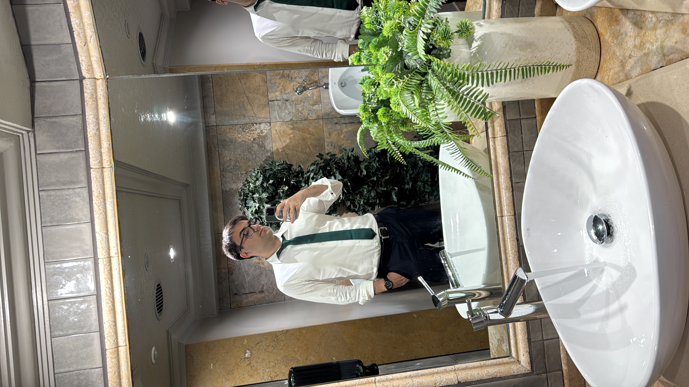

04
Mi deporte favorito
La arquería es mi deporte favorito. Me atraen la concentración, la técnica y la paciencia que exige cada disparo. Es una forma de desconectar, mejorar poco a poco y aprender a cuidar cada detalle.
Una pequeña biografía
Soy ingeniero de software y me gusta convertir las ideas en proyectos útiles. Este blog es una colección de intereses: viajes que todavía están en el mapa, discos que siguen sonando y preguntas que me apetece explorar.
Cuando no estoy trabajando en proyectos web, disfruto de la arquería, descubriendo música de otras épocas y leyendo sobre culturas diferentes.

04
La arquería es mi deporte favorito. Me atraen la concentración, la técnica y la paciencia que exige cada disparo. Es una forma de desconectar, mejorar poco a poco y aprender a cuidar cada detalle.
05
Mi tag de amigo: Bidoff. Me gustan los juegos que combinan coordinación, práctica y momentos para compartir con amigos.